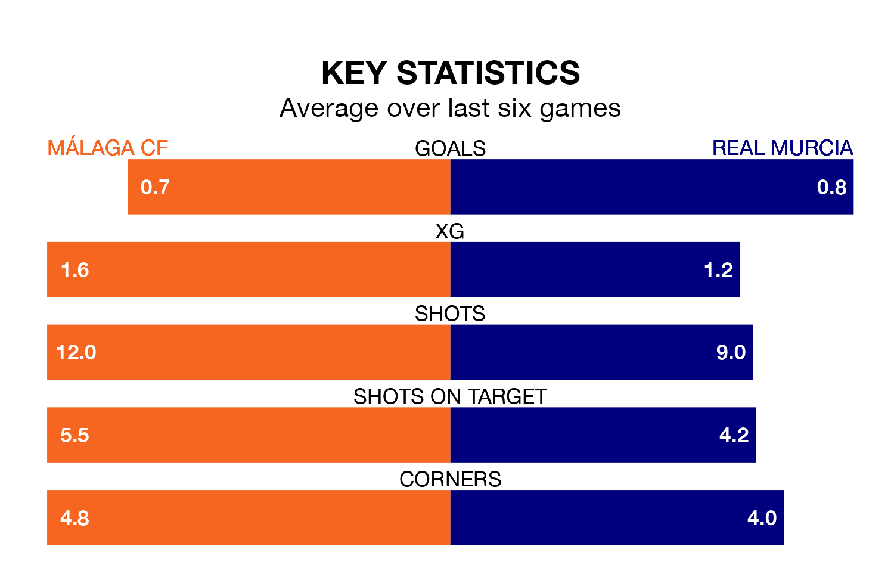

Real Murcia visit Málaga CF at the Estadio La Rosaleda on early Sunday on the back of four consecutive wins in Primera Division RFEF Group 2.
Murcia have picked up 13 points from their last six games, and they face a Málaga side who also won their last match, and have collected 10 points from the last possible 18.
With 44 goals in 32 games so far this season, Málaga are scoring more than average in the league with 1.4 goals per game. And they are conceding fewer than average, letting in 21 goals at a rate of 0.7 per game.
Murcia, meanwhile, are below average scorers, with 1.0 goal per game, compared to a league average of 1.1. They have also conceded 1.0 goal per game.
In Roberto Fernández Jaén, the hosts have one of the league's most on-form strikers so far this season. He has notched 10 goals in 23 appearances, to sit second in the scoring charts.
The away side's top scorers, with five goals each, are José Ángel Carrillo Casamayor and Rodrigo Ríos Lozano.
Málaga are fourth in the table after 32 games, of which they have won 17 and drawn 10, earning 61 points.
Murcia are three places behind Málaga in seventh, with 14 wins and eight draws putting them on 50 points.
Málaga's last match was on Sunday, a 1-0 win against Atlético Madrid B, with Fernández Jaén getting the goal for Málaga.
Murcia beat UD Melilla 2-0 last time out, also on April 14, with Carrillo Casamayor and Tomás Pina on the scoresheet.
Updated: 11:31 (UTC), 15/04/24